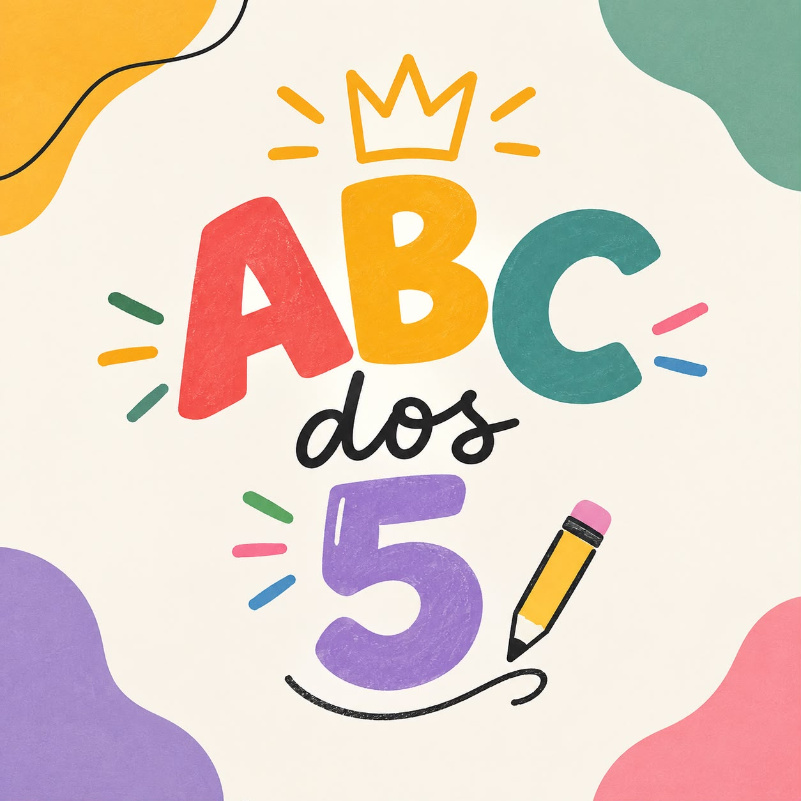
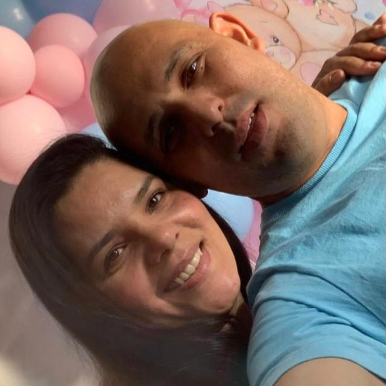
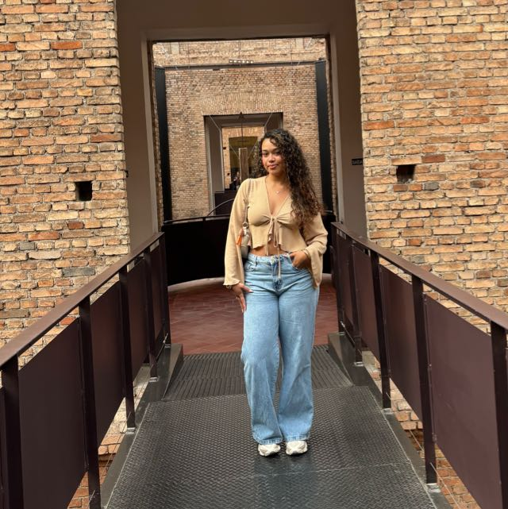

Sujeito Ativo
O aluno participa da aprendizagem: observa, pergunta, testa ideias e relaciona o conteúdo ao que já sabe.

Apresentação do Grupo
Construtivismo, Mediação e Prática Pedagógica
Reza a lenda, totalmente inventada, que na sala de aula da UNINOVE quatro mulheres e um homem se reuniram em torno da Távola Redonda para enfrentar uma missão: apresentar o construtivismo e desvendar um estudo de caso. Não levaram espadas: levaram ideias, conteúdo e criatividade. Cada integrante trouxe uma hipótese; depois de muita conversa, até o WhatsApp aprendeu o conteúdo. Assim nasceu o Grupo ABC dos 5: na base do diálogo, da construção coletiva e, claro, de uma boa dose de café imaginário.


Explorar o construtivismo e analisar como suas ideias se relacionam à prática docente diante do estudo de caso.
Uma professora não intervém quando os alunos afirmam que "vacinas não funcionam", alegando respeitar o protagonismo e que "todas as opiniões são válidas". Colegas lembram que a aprendizagem exige mediação social (Vygotsky) e o desenvolvimento cognitivo (Piaget).
Como valorizar vozes e narrativas historicamente marginalizadas no currículo sem cair num ceticismo extremo que invalide o conhecimento científico?
O aluno participa da aprendizagem: observa, pergunta, testa ideias e relaciona o conteúdo ao que já sabe.
Aprendemos também com outras pessoas. Professor e colegas ajudam por meio de conversas, orientações e atividades em conjunto.
O aluno tem voz e participa das atividades. Isso não significa aprender sozinho nem que toda afirmação esteja automaticamente correta.
As ideias são comparadas com pesquisas, evidências e fontes confiáveis. Respeitamos quem fala e analisamos com cuidado o que é dito.
Dar o primeiro passo e deixar com que a criança dê continuidade.
A criança testa o que já sabe:
“Por que o mundo é azul?”
Só ocorre se algo gera conflito cognitivo. Sem intervenção, a ideia não é questionada.
Sem desequilíbrio, a crença se mantém e não há novo aprendizado.
É a mudança na forma como a criança pensa e entende o mundo. Para Piaget, ela não recebe o conhecimento pronto: constrói o que sabe por meio de ações, experiências e desafios.
Assimilar é relacionar uma novidade ao que já se conhece. Acomodar é mudar uma ideia quando ela não explica mais o que se observa.
Acontece quando uma informação ou experiência não combina com o que a criança pensava. Esse estranhamento pode levá-la a fazer perguntas, investigar e rever suas ideias.
O professor propõe desafios, faz perguntas e oferece materiais para a turma investigar. Ele orienta a aprendizagem sem entregar todas as respostas prontas.
Aprendemos também com outras pessoas. O professor ajuda a turma fazendo perguntas, explicando ideias e organizando atividades em grupo.
É o que o aluno ainda não consegue fazer sozinho, mas consegue realizar com ajuda. Por exemplo, o professor dá pistas para resolver um problema e, aos poucos, deixa o aluno tentar por conta própria.
Conversar ajuda a organizar e compartilhar ideias. Ao explicar o que pensam e ouvir os colegas, os alunos podem refletir, fazer perguntas e rever suas conclusões com base em informações confiáveis.
Cada aluno traz experiências, conhecimentos e costumes de sua família e comunidade. Essas vivências devem ser respeitadas e discutidas junto com outras fontes e conhecimentos científicos.
Diante da afirmação “vacinas não funcionam”, o professor pode acolher a dúvida e conduzir a turma a investigar a questão com respeito e rigor científico.
Aprendizagem por Situação-Desafio (Ex: Desafio de Flutuação em vez de aula sobre densidade).
O professor lança um problema prático sem dar a resposta.
O aluno erra ao prever o resultado e percebe que suas ideias antigas não funcionam.
Testando e manipulando objetos, o aluno ajusta seu raciocínio (acomodação) e descobre a regra por conta própria.
Transformar o aluno em pesquisador e o professor em mediador de perguntas.
Nesse sentido Piaget nos lembra de respeitar o tempo e o ritmo de cada aluno. Enquanto, Vygotsky nos mostra que aprendemos melhor em grupo.
Assim, formaremos cidadãos autônomos, críticos, criativos e capazes de continuar aprendendo ao longo de sua jornada.